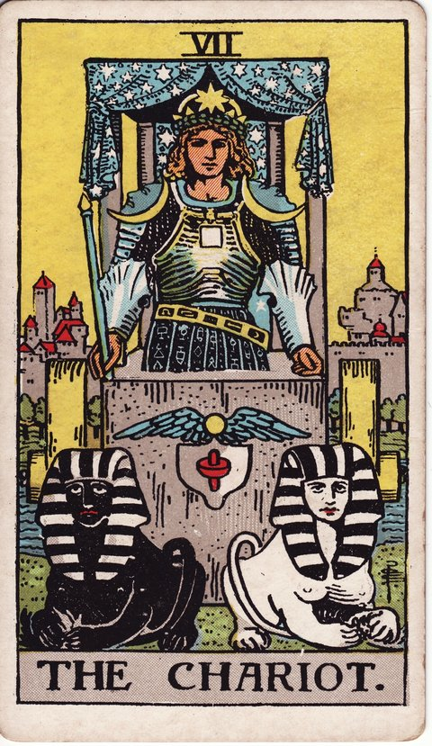

메이저 아르카나 · 타로 카드 백과사전
전차 (The Chariot)

정방향
키워드: 강한 추진력 · 확고한 목표의식 · 거침없는 전진 · 뚝심 있는 뒷심 · 몰아가는 배짱 · 목적지를 향한 질주
조언: 자신감을 갖고 목표를 향해 거침없이 밀어붙여 보세요.
연애운
솔로
적극적으로 마음을 표현하면 원하는 사람의 마음을 얻을 수 있는 시기입니다. 머뭇거리지 않고 마음을 표현하는 용기가 좋은 결과를 만듭니다.
커플
확고한 의지로 관계를 원하는 방향으로 이끌어갈 수 있는 시기입니다. 관계의 방향을 분명히 제시하면 상대도 믿고 따라와 줄 수 있습니다.
재물운
소비
목표를 세우고 계획적으로 지출하면 원하는 것을 확실히 얻는 시기입니다. 목표가 분명하면 불필요한 지출을 자연스럽게 줄일 수 있습니다.
투자
확신을 갖고 밀어붙인 투자가 좋은 성과로 이어질 수 있는 시기입니다. 확신이 선 만큼 과감하게 밀어붙이면 좋은 성과를 얻습니다.
취업운
구직
강한 의지와 자신감으로 원하는 자리를 향해 적극적으로 나아가는 시기입니다. 망설이지 않고 적극적으로 도전하는 태도가 좋은 결과를 부릅니다.
이직
확고한 목표 의식으로 새로운 자리에서 빠르게 성과를 내는 시기입니다. 명확한 목표 의식이 빠른 적응과 성과로 이어집니다.
직장운
팀워크
강한 추진력으로 팀의 목표 달성을 이끌어가는 시기입니다. 확고한 방향 제시가 팀 전체의 추진력을 끌어올립니다.
개인성과
확고한 의지로 맡은 업무를 흔들림 없이 밀고 나가는 시기입니다. 흔들리지 않는 의지가 어려운 업무도 끝까지 밀고 나가게 해줍니다.
사업운
창업준비
확고한 의지로 사업을 밀어붙이며 초반 기세를 잡는 시기입니다. 초반의 기세를 살려 과감하게 밀어붙이면 좋은 출발이 됩니다.
운영중
강한 추진력으로 사업 확장이나 목표 달성을 이끌어내는 시기입니다. 확고한 추진력이 사업을 다음 단계로 끌어올려줍니다.
학업운
시험준비
목표를 정하고 강하게 밀어붙이면 좋은 성적을 얻을 수 있는 시기입니다. 목표를 향한 확고한 의지가 좋은 성적으로 이어집니다.
진로고민
확고한 목표 의식이 진로를 향해 흔들림 없이 나아가게 해주는 시기입니다. 흔들림 없는 목표 의식이 진로 선택을 더 확실하게 만들어줍니다.
건강운
신체
강한 의지로 체력 관리나 운동 목표를 확실히 달성하는 시기입니다. 명확한 목표를 세우면 운동도 더 꾸준히 이어갈 수 있습니다.
정신
목표를 향한 확고함이 정신적으로 강한 활력을 주는 시기입니다. 확고한 의지가 어려운 상황도 밀고 나갈 힘을 줍니다.
대인관계운
새로운 인연
적극적이고 자신감 있는 태도로 관계를 주도하며 좋은 인상을 남기는 시기입니다. 자신감 있는 태도가 새로운 사람들에게 좋은 인상을 남깁니다.
기존 관계
가까운 사람들과의 관계에서 중심을 잡고 이끌어가는 역할을 맡게 되는 시기입니다. 우유부단하게 굴기보다 결정을 명확히 내려주면 다들 안심하고 따라옵니다.
명예운
확실한 성과와 추진력으로 뚜렷하게 인정받는 시기입니다. 확실한 성과가 자연스럽게 주변의 인정으로 이어집니다.
이사운
목표한 곳으로 확실하고 신속하게 이동을 추진하는 시기입니다. 명확한 목표가 있는 만큼 이동 준비도 신속하게 진행됩니다.
자식운
아이를 위해 적극적으로 나서며 추진력 있게 이끄는 시기입니다. 적극적인 태도로 아이를 이끌면 좋은 결과로 이어질 수 있습니다.
역방향
키워드: 방향 상실 · 통제력 상실 · 무리한 밀어붙임 · 기세만 앞선 헛심 · 잃어버린 좌표 · 치우친 무게중심
조언: 감정적으로 밀어붙이기 전에 목표를 다시 명확히 하고 균형을 잡으세요.
연애운
솔로
너무 밀어붙이는 태도가 상대를 부담스럽게 만들 수 있으니 속도를 조절하세요. 속도를 늦추고 상대의 마음이 준비될 시간을 주세요.
커플
감정을 앞세워 밀어붙이다 오히려 관계가 삐걱거릴 수 있는 시기입니다. 밀어붙이기 전에 상대의 마음도 함께 헤아려보는 것이 필요합니다.
재물운
소비
감정적으로 밀어붙인 소비가 예산 계획을 흔들 수 있으니 주의하세요. 감정이 앞선 소비는 나중에 후회로 남을 수 있으니 잠시 멈춰보세요.
투자
무리한 확장이나 성급한 투자로 통제력을 잃을 수 있는 시기입니다. 속도를 늦추고 리스크를 다시 한번 점검해보는 것이 안전합니다.
취업운
구직
방향을 정하지 못한 채 힘만 쏟다 성과 없이 지칠 수 있습니다. 무작정 힘쓰기보다 방향부터 다시 명확히 정하는 것이 필요합니다.
이직
충동적인 이직 추진이 예상치 못한 어려움으로 이어질 수 있는 시기입니다. 충동적으로 결정하기 전에 조건을 한 번 더 확인해보세요.
직장운
팀워크
독단적으로 밀어붙이다 동료와 마찰이 생길 수 있는 시기입니다. 혼자 결정하기보다 동료의 의견을 먼저 들어보는 것이 좋습니다.
개인성과
맡은 업무의 우선순위를 놓친 채 힘만 쓰다 지칠 수 있는 시기입니다. 상사와 함께 무엇이 가장 급한 일인지부터 다시 정리해보세요.
사업운
창업준비
방향이 명확하지 않은 채 무리하게 밀어붙이면 위험할 수 있습니다. 방향을 먼저 명확히 정한 뒤에 속도를 내는 것이 안전합니다.
운영중
사업을 앞뒤 재지 않고 키우다 정작 필요한 자금이 바닥날 수 있는 시기입니다. 확장 속도를 늦추고 현재 자금 흐름부터 냉정하게 재점검해보세요.
학업운
시험준비
조급하게 몰아붙이다 오히려 집중력이 흐트러질 수 있는 시기입니다. 조급함을 내려놓고 차분하게 속도를 조절해보세요.
진로고민
방향을 정하지 못한 채 성급하게 밀어붙이다 혼란을 겪을 수 있습니다. 성급하게 결정하기보다 방향을 다시 한번 점검해보는 것이 좋습니다.
건강운
신체
무리한 운동이나 과로로 몸에 탈이 날 수 있으니 속도를 조절하세요. 몸이 보내는 신호를 무시하지 말고 속도를 늦춰보세요.
정신
조급함과 압박감이 쌓이며 정서적으로 지칠 수 있는 시기입니다. 잠시 멈춰 숨을 고르는 시간이 필요할 수 있습니다.
대인관계운
새로운 인연
지나치게 밀어붙이는 태도가 상대에게 부담을 줄 수 있는 시기입니다. 속도를 조절하며 상대가 편안함을 느낄 시간을 주세요.
기존 관계
일방적으로 밀어붙이는 태도가 관계에 긴장을 만들 수 있습니다. 일방적으로 이끌기보다 상대의 속도도 함께 맞춰보세요.
명예운
무리하게 밀어붙이는 태도가 평판에 부정적으로 작용할 수 있습니다. 결과를 서두르기보다 과정에서의 태도도 함께 신경 써보세요.
이사운
성급한 이동 결정이 예상치 못한 혼란을 만들 수 있는 시기입니다. 속도를 늦추고 조건을 한 번 더 확인한 뒤 결정하세요.
자식운
지나친 강요와 밀어붙임이 아이와의 마찰로 이어질 수 있습니다. 밀어붙이기보다 아이의 속도에 맞춰 기다려주는 것이 필요합니다.
같은 슈트: 바보 · 마법사 · 여사제 · 여황제 · 황제 · 교황 · 연인 · 전차 · 힘 · 은둔자 · 운명의 수레바퀴 · 정의 · 매달린 사람 · 죽음 · 절제 · 악마 · 탑 · 별 · 달 · 태양 · 심판 · 세계
홈에서 직접 카드 뽑아보기 ↗